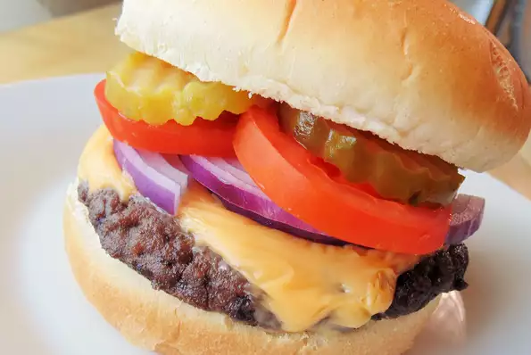

Burger

Big Smokey Burgers recipe
I created this recipe while trying to recreate the best burger I had ever tasted at a restaurant in the Great Smoky Mountains of North Carolina. My family and I think these burgers are better! They are packed with flavor!
Ingredients
- 2 pounds ground beef sirloin
- ½ onion, grated
- 1 tablespoon grill seasoning
- 1 tablespoon liquid smoke flavoring
- 2 tablespoons Worcestershire sauce
- 2 tablespoons minced garlic
- 1 tablespoon adobo sauce from canned chipotle peppers
- 1 chipotle chile in adobo sauce, chopped
- salt and pepper to taste
- 6 (1 ounce) slices sharp Cheddar cheese (Optional)
- 6 hamburger buns
Steps:
- Preheat an outdoor grill for medium-high heat.
- Combine ground sirloin, onion, grill seasoning, liquid smoke, Worcestershire sauce, garlic, adobo sauce, and chipotle pepper in a large bowl. Form the mixture into 6 patties. Season with salt and pepper.
- Place burgers on preheated grill and cook until no longer pink in the center. Place a slice of Cheddar cheese on top of each burger one minute before they are ready. Place burgers on buns to serve.